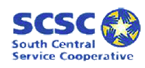

| The Cambrian Group provides K-12 educational leaders training and support for strategic planning. Website Link! | |
| East Central Minnesota Educational Cable Cooperative Website link! | |
| Kyocera-Mita is a cmERDC partner providing professional copy and fax equipment with complete networking options . | |
| Automated Managed Print Services from Loffler will reduce cost and increase efficiencies within your district or school. Webpage Link ! | |
| Innovative Office Solutions is more than a preferred supplier for office supplies. Easy on-line ordering & Inky Rewards Program. On-line Ordering! | |
| The Schools Interoperability Framework (SIF) Association is an alliance of schools, government, vendors and consultants that define inter-application connectivity and automatic data sharing and updates. Website Link ! | |
|  |
SouthCentral Service Cooperative (SCSC) programs and services are memberdriven to utilize resources
in the most efficient and effective mannerpossible. SCSC is one of nine regional agencies called service cooperatives,
established in 1976 by Minnesota legislation (M.S.123A.21). cmERDC has partnered with SCSC to offer their districts our
Viewpoint® Suite of data warehouse solutions. SCSC Website |
| Triarco offers a complete selection of quality art supplies to educators for over 50 years. Receive a 25% discount off most catalog items by referencing cmERDC contract #23434 Website Link | |
| Virco enables its members to purchase quality Virco classroom furniture at extraordinarily low prices all year long. Contact us for current prices and catalogs. Website Link ! | |